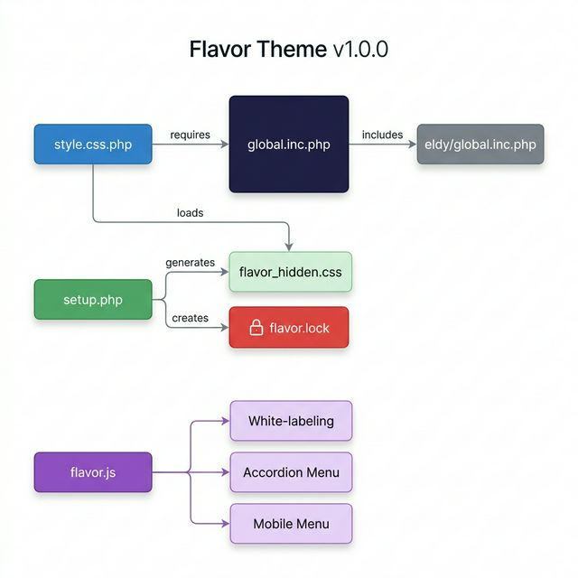

| File | Purpose | Lines |
|---|---|---|
global.inc.php | Core CSS — all visual styling | ~4991 |
style.css.php | CSS loader + login button/footer fixes | ~346 |
theme_vars.inc.php | PHP color variables for Dolibarr | ~200 |
setup.php | Admin config panel (menu manager, lock) | ~467 |
flavor.js | White-labeling, accordion, mobile menu | ~298 |
dolisaas-ui.js | Dark-mode search, sidebar search | ~60 |
README.md | Documentation | ~119 |
CHANGELOG.md | Version history | ~80 |
| Phase | Feature | Status |
|---|---|---|
| 1 | Design System (CSS variables, :root tokens) | ✅ Done |
| 2 | Dual Sidebar Layout (icon bar + submenu) | ✅ Done |
| 3 | Top Bar Modernization (glassmorphism, search) | ✅ Done |
| 4 | Tables & Lists (rounded corners, hover effects) | ✅ Done |
| 5 | Forms & Inputs (modern styling, focus states) | ✅ Done |
| 6 | Icons Modernization (indigo filter, FA mapping) | ✅ Done |
| 7 | Mobile Menu (hamburger, slide-in panel ≤1024px) | ✅ Done |
| 8 | TakePOS Modernization (gradient layout, cards) | ✅ Done |
| 9 | White-labeling (Dolibarr→Dolisys, branding) | ✅ Done |
| 10 | Menu Manager + Security Lock (setup.php) | ✅ Done |
| 10.2 | Granular Admin Tools & Module Tabs control | ✅ Done |
| 10.3 | Login Button Fix (hardcoded gradient) | ✅ Done |
| 11.3 | Dashboard Widgets Modernization | ✅ Done |
| — | Deep Metrics Grid (cards, #db_view0) | ✅ Done |
| — | "By NovaDX" login footer | ✅ Done |
| Feature | Reason |
|---|---|
| Sidebar Pin/Unpin toggle | ⏸ Deferred — Dolibarr's #id-container margin requires deeper layout refactoring |
| Check | Result |
|---|---|
setup.php admin-only access | ✅ OK — $user->admin enforced |
flavor.lock blocks config changes | ✅ OK — Checked before any HTML |
No eval/exec/shell_exec | ✅ Clean |
| No XSS (user input sanitized) | ✅ OK — CSS values are hardcoded arrays |
file_put_contents admin-only | ✅ OK — Only in savemenus/locksetup |
| Instance files excluded from git | ✅ OK — .gitignore updated |
| CSRF protection | ⚠️ Note — NOCSRFCHECK defined (acceptable for admin-only) |
var(--flavor-primary-500) used inside linear-gradient() — undefined on login page, invalidating the entire background property#6366F1 + PHP echo fallback in style.css.phpflavor.lock and flavor_hidden.css were tracked.gitignore, removed from tracking45207be Security: gitignore instance-specific files 256083a Remove Pin/Sidebar toggle feature (deferred) 5fe0c06 Phase 11.1: Pin button + deep dashboard grid cab3f1a Phase 11: Sidebar toggle + Dashboard widgets 51a6d70 Fix root cause: var(--flavor-primary-500) → #6366F1 58336e4 Update author credits to Octavio Daio / NovaDX a136294 Add CHANGELOG.md f925b75 Add README.md 12fbb81 Remove unlock instructions from lock screen 152d783 Phase 10.2: Granular Admin Tools + Module Tabs 0061b1b Phase 10: Menu Manager & Security Lock 225c463 Initial commit: NovaDX Flavor theme
#mainbody #id-container margin via JS instead of CSS-only--flavor-slate-*), needs alternate :root values$user->conf instead of localStoragesetup.php